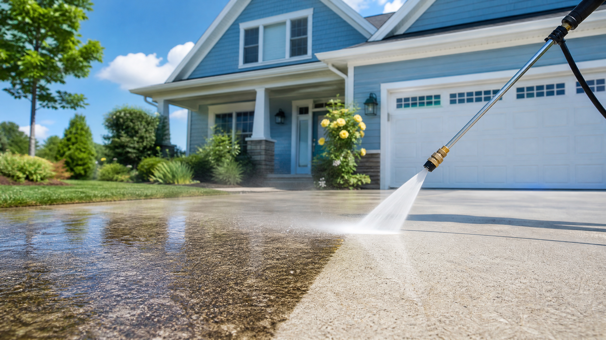

Exterior cleaning guidance for Mid-Missouri homeowners
Learn what your home needs before you put pressure on it.
Mid-Mo Power Wash Pro explains pressure washing, soft washing, siding cleaning, driveway cleaning, deck cleaning, and the jobs that are better left to G&S Exterior Restoration.

G&S Exterior Restoration
Mid-Mo Power Wash Pro is built by G&S Exterior Restoration to help Mexico Missouri and Mid-Missouri homeowners make better cleaning decisions before renting a machine or risking damage.
Pick the cleaning question you are trying to answer.
Use these pages to choose pressure, nozzle angle, cleaner, and whether the surface needs pressure washing, soft washing, surface cleaning, or a trained crew.
PSI and surface limits
Find starting ranges for concrete, siding, brick, wood, and outdoor furniture before you pull the trigger.
Nozzles, tools, and cleaner
Know what each tip does, when a surface cleaner helps, and why detergent often beats more pressure.
Driveway, siding, and deck cleaning
Walk through common Mid-Missouri exterior cleaning jobs with simple checks before you start.
Clean with the least force that works.
Start with distance, a wide fan, and cleaner. If a surface chalks, leaks, flakes, or fibers lift, stop and rethink the method.
Read the safety checksCall G&S when you see:
- Oxidized or chalky siding
- Roof stains, algae, or steep access
- Loose paint, failing mortar, or soft wood
- Oil, rust, or deep concrete staining
- Work near outlets, fixtures, or upper-story siding